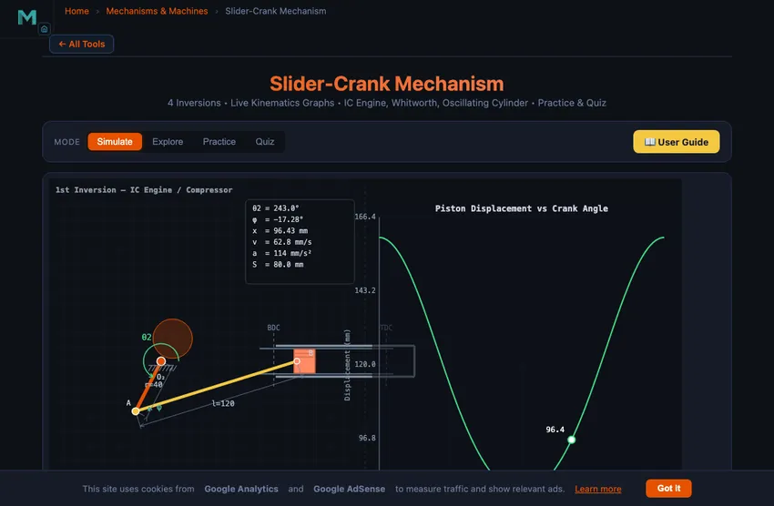
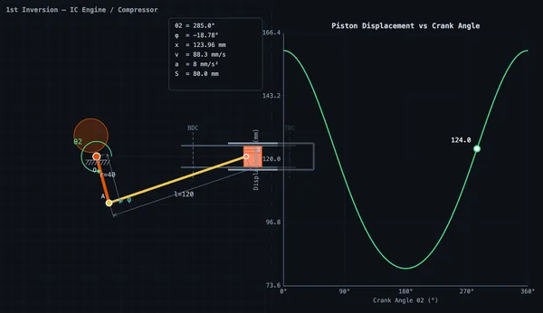

Slider-Crank Mechanism
3D Model — Slider-Crank Mechanism
Free slider crank mechanism simulator — explore all 4 inversions including IC engine and quick return. Live kinematics graphs and piston animation included.
4 Inversions • Live Kinematics Graphs • IC Engine, Whitworth, Oscillating Cylinder • Practice & Quiz
1 Overview
The Slider-Crank Mechanism Simulator is an interactive tool for studying the slider-crank linkage and all four of its kinematic inversions. The slider-crank converts rotary motion into reciprocating linear motion (or vice versa) and is the backbone of internal combustion engines, reciprocating compressors, and many industrial machines.
This simulator covers the complete kinematics: piston stroke, displacement, velocity, and acceleration as functions of crank angle. You can visualise how the connecting rod ratio (n = l/r) affects motion symmetry, explore TDC and BDC dead-centre positions, and study all four inversions including the IC engine, Whitworth quick-return, oscillating cylinder engine, and hand pump.
2 Loading the Mechanism
The simulator opens in Simulate mode with the 1st inversion (classic IC engine) preset. The split canvas shows the animated mechanism on the left and a real-time kinematics graph on the right.
Use the SI / Imperial switch beside the graph selector to work in inches instead of millimetres. Crank radius, con-rod length, offset, piston displacement, stroke, velocity (in/s) and acceleration (in/s²) all convert together, including the graph's y-axis title and tick numbers and the on-canvas data panel. Crank speed stays in RPM and the length ratio n = l/r is dimensionless, so both read the same in either system.
- Use the Crank r and Con-rod l sliders to adjust mechanism geometry.
- The Offset e slider introduces an offset between the slider path and crank pivot for asymmetric configurations.
- Switch between Inversions (1st through 4th) using the inversion tabs.
- Select which Graph to display: displacement x(θ), velocity v(θ), acceleration a(θ), or torque T(θ).
- Load industry-relevant presets like IC Engine, Quick Return, Rotary Engine, and Hand Pump.
3 Watching the Motion
In Simulate mode, the left canvas renders the animated slider-crank mechanism with colour-coded links. The crank rotates continuously while the piston (slider) reciprocates along its guide. A connecting rod links the crank pin to the piston.
The right canvas displays live kinematics graphs plotting displacement, velocity, acceleration, or turning moment against crank angle. A tracking crosshair follows the current position on the curve. Readout cards show crank angle θ₂, connecting rod angle φ, displacement x, velocity v, acceleration a, stroke length, connecting rod ratio n, and time ratio.
For offset configurations, the forward and return strokes have different durations, quantified by the time ratio. This asymmetry is exploited in quick-return mechanisms used in shaping and slotting machines.
4 Geometry & Theory
Switch to Explore to study 12 concepts organised into three categories:
- Basics — Slider-crank anatomy, the four inversions, dead centres (TDC/BDC), stroke calculation, and connecting rod ratio.
- Kinematics — Piston displacement equation, velocity analysis, acceleration analysis, and the effect of finite connecting rod length.
- Design & Applications — IC engine mechanisms, quick-return machines, oscillating cylinder engines, hand pumps, and time ratio calculations.
Each concept includes clear explanations, formulas, and worked examples suitable for engineering education and engineering education.
5 Try a Problem
Practice mode generates random numerical problems on piston displacement, velocity, acceleration, stroke length, and time ratio. Enter your answer and receive immediate feedback with a step-by-step solution for incorrect answers.
Quiz mode tests your knowledge with 5 randomised questions from a pool of 15, mixing multiple-choice and numerical problems. Review all answers after completion.
6 Design Notes
- Start with the 1st inversion preset (IC Engine) to understand the basic mechanism before exploring other inversions.
- Compare the displacement curves for different connecting rod ratios to see how n = l/r affects motion symmetry.
- Use the offset slider to create asymmetric configurations and observe how the time ratio changes for quick-return applications.
- Switch between graph types to see how displacement, velocity, and acceleration relate to each other as derivatives.
- Remember: stroke = 2r for an inline slider-crank, but offset configurations modify this relationship.
- Use Explore mode as a quick reference for formulas before attempting Practice problems.
What Is a Slider-Crank Mechanism?


A slider-crank mechanism is a fundamental single-degree-of-freedom linkage that converts rotary motion into reciprocating linear motion (or vice versa). It consists of four kinematic elements: a crank (rotating link), a connecting rod (coupler), a slider (piston), and the fixed frame. This mechanism is the backbone of internal combustion engines, reciprocating compressors, and many industrial machines.
The kinematics of the slider-crank are governed by the crank radius r, connecting rod length l, and any offset e between the slider path and the crank pivot. For an inline configuration (e=0), the piston displacement is x = r·cos(θ) + √(l² − r²·sin²(θ)), the stroke equals 2r, and dead centres occur at θ=0° (TDC) and θ=180° (BDC).
The Four Inversions
By fixing different links, the slider-crank produces four distinct inversions. The 1st inversion (frame fixed) is the classic IC engine. The 2nd inversion (crank fixed) gives the Whitworth quick-return mechanism and the rotary engine. The 3rd inversion (connecting rod fixed) produces the oscillating cylinder engine. The 4th inversion (slider fixed) yields the hand pump and bull engine. Each inversion has unique industrial applications.
Kinematics & Graphs
This simulator provides real-time graphs of piston displacement, velocity, acceleration, and turning moment as functions of crank angle. The connecting rod ratio n = l/r (typically 2.5–5 for engines) significantly affects the shape of these curves. An offset slider-crank introduces asymmetry in the forward and return strokes, quantified by the time ratio.
Why the Slider-Crank Is Everywhere
Every reciprocating engine in the world — from a 250 cc motorcycle to the 14 m-bore container-ship diesel — uses the slider-crank to convert linear combustion-pressure force on the piston into rotary torque on the crankshaft. The same mechanism in reverse drives reciprocating compressors and pumps. Steam locomotives ran on it for 150 years. The geometric ratio of crank length to connecting-rod length (typically n = l/r = 3 to 5 in engines) is critical — smaller n makes the motion more asymmetric, larger n makes it smoother but reduces compactness.
The Velocity Asymmetry — Why TDC Is Slower Than Mid-Stroke
Piston speed varies sinusoidally to first order, but the finite connecting rod makes it asymmetric. The piston spends more time near top-dead-centre (TDC) than near bottom-dead-centre (BDC). For an engine with n = 4, the time fraction near TDC is about 53% vs 47% near BDC. This matters for combustion: the spark fires before TDC so combustion peaks just after, while the piston is still moving relatively slowly — maximising the work extracted from the expanding gas. The valve timing is similarly tuned to this asymmetry.
References
- Norton, R. L. — Design of Machinery, 6th ed., Chapter 4 (Position Analysis) and 6 (Velocity Analysis).
- Heywood, J. B. — Internal Combustion Engine Fundamentals, 2nd ed. for engine-specific applications.
- Shigley & Uicker — Theory of Machines and Mechanisms, 5th ed.
Explore Related Simulators
If you found this Slider-Crank Mechanism simulator helpful, explore our Four-Bar Linkage simulator, Cam & Follower simulator, and Flywheel simulator for more hands-on practice.